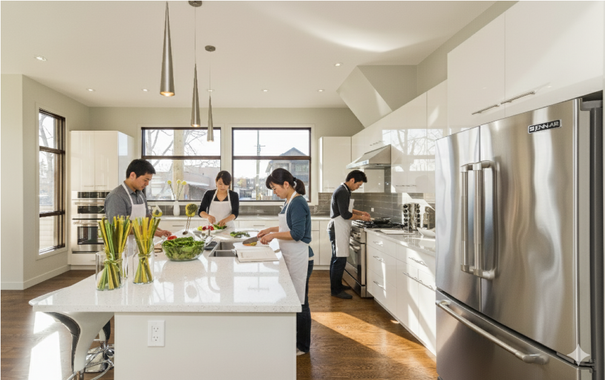
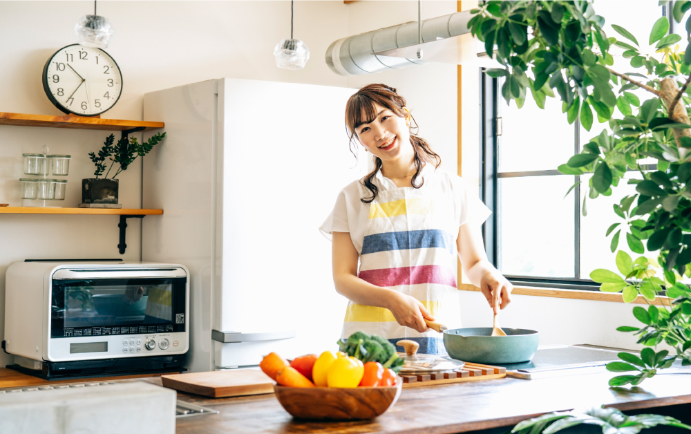

キッチンスタジオ

日差しのさしこむあたたかいキッチン。自宅にいるようなアットホームな空間でリラックスして料理を学べます。
経験豊富な講師陣が、一人ひとりに寄り添い丁寧な指導でサポートします。
気取らない教室の雰囲気の中、料理を通じて楽しい時間をご一緒しませんか。
講師紹介

若手講師：優月（ゆづき）
明るく親しみやすい雰囲気で、若い世代の方から圧倒的な支持を集める人気講師です。現代的なセンスを取り入れつつ、家庭で実践しやすいレシピを提案しています。
経歴:
調理師専門学校を卒業後、
都内の人気カフェでキッチンスタッフとして勤務。
SNSでのレシピ投稿が話題となり、独立。「まごころキッチン」立ち上げメンバーとして、若者の食生活を豊かにするメニュー開発を担当。
得意な料理:
カフェ風のおしゃれなワンプレートごはん
時短・簡単！お弁当のおかず
旬のフルーツを使った手作りスイーツ
ベテラン講師：和子（かずこ）
長年の主婦経験と料理人としての知識を活かし、家庭料理の基本と知恵を優しく丁寧に教えてくれます。生徒さんからは「お母さんの味」と慕われる、あたたかい存在です。
経歴:
老舗料亭で修行を積み、調理師免許を取得。結婚・出産を機に家庭に入り、三児の母として日々の食卓を支える。近所のママ友に料理を教え始めたことがきっかけで、講師としての道へ。「荻窪Mogu料理教室」では、日本の伝統的な家庭料理を中心に担当。
得意な料理:
基本のだしから取る和食全般
（煮物、焼き魚、季節の炊き込みごはん）
家族が喜ぶ定番の洋食メニュー
（ハンバーグ、カレーライス）
漬物や保存食作り